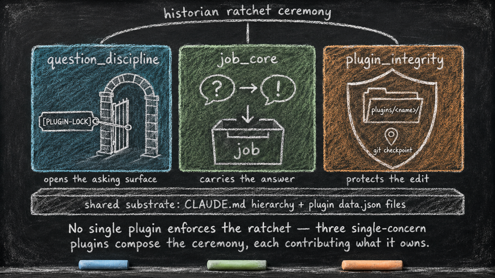

The Historian Ratchet
Essay 5.8 — The Always-On Digital Cortex, Part 8 of 9.
In the historical Claude-based reference architecture traced in this series, Essay 5.7 built the working-memory form — a hierarchy of project instruction files with its four-footer protocol and altered-list gate. This part closes the essay’s deep-dive set with one example of what the always-on layer can do when its single-concern plugins compose: several narrow plugins participate in one protected editing ceremony, without any one of them owning the whole ceremony.
Per-plugin living history
For the architects in the audience: the historian ratchet we sketched earlier is worth examining in detail, because it captures the discipline of the whole always-on layer. ⓘ
In that prototype, every plugin has a file called evolution.md. It is a word-capped narrative (the prototype caps it at a few thousand words; your seed can tune the cap) of how the plugin got to its current state — what was added, what was rejected, what was learned during which cycle. It is auto-injected into the agent’s context whenever the plugin is unlocked for editing. Think of it as the per-plugin counterpart to a durable conversation summary. The conversation summary carries the user-agent exchange across compactions; evolution.md carries the summary of the plugin’s own life across cycles. Where git log keeps the mechanical record, evolution.md keeps the narrative one. ⓘ
The naive version of this would be: "documentation that updates itself when the plugin changes."
The seed agent’s version is sharper.
The drift counter and the block
When the agent attempts to unlock a plugin for editing — by issuing a question with the prefix [PLUGIN-LOCK] <plugin_name> — the lock manager runs a small drift-check against the target plugin. The check is a single git command that counts how many commits have touched the plugin since the last time its evolution narrative was synced. The result is the drift count: the number of commits the plugin has accumulated since its history was last narrated. If that count meets or exceeds a configurable threshold (currently ten in the prototype), the unlock is blocked and the agent is told to dispatch the plugin’s historian subagent first. ⓘ
Each plugin has its own dedicated historian, so the narrative voice for each plugin stays consistent across its lifetime. The prototype generates these historians from a shared template while keeping each historian’s scope tied to one plugin. ⓘ
When dispatched, the plugin’s historian reads the drift log, synthesizes what changed since the last sync, and edits evolution.md under the word cap enforced by a dedicated hook that blocks any edit which would push the file past it. When the cap fires, the block does more than refuse — it coaches the historian to retry with a tighter narrative and to migrate any overflow into sibling documents (per-cycle deep-dives, a decisions log, technical appendices), with evolution.md becoming an executive summary that references those siblings rather than absorbing them. ⓘ
The historian’s last mandatory step is to commit. That commit touches evolution.md, which becomes the new sync point, which means the drift counter resets to zero — and the next set of edits will eventually push it back up, and the cycle repeats. ⓘ
This is the ratchet pattern. A plugin cannot be edited indefinitely without periodically forcing the historian to re-narrate its evolution. Several mechanisms enforce it together: the drift counter that measures elapsed commits, the block that refuses unlock at the threshold, and the historian’s own commit that resets the counter — without that reset, the next [PLUGIN-LOCK] deadlocks. ⓘ
The pattern is portable. Anywhere a system needs to enforce a discipline-that-must-be-done-eventually, the same shape works: a counter that climbs with normal work, a block that fires when the counter crosses a threshold, and a corrective action whose own completion resets the counter. A consulting practice could install the same ratchet on client-deliverable templates: a counter climbs with every template edit, blocks the next checkout at a threshold, and only the practice lead’s narrative re-sync (what changed, why, what’s still open) resets it. The discipline becomes mechanically inescapable.
The lesson is small: read the work before changing it.
The mechanism makes the lesson non-negotiable. The agent is not suggested to re-read the plugin’s history before editing — a suggestion would be ignored under deadline pressure. The lock blocks. The historian runs. Only then can the work proceed. There is no quiet way around it. GMODE — the operator’s deliberate maintenance lane, entered only by writing a long [GMODE] justification (the prototype sets a word floor; your seed can tune it) — lifts the OPEVC phase controls but not the always-on layer beneath them. plugin_integrity keeps enforcing in gmode, so a [PLUGIN-LOCK] there still hits the drift gate and the historian still has to run before the plugin unlocks. The ratchet is part of the substrate the maintenance lane rests on, not something the lane steps over. ⓘ

Composed ceremony from single-concern plugins
The full lock-and-edit ceremony looks like one mechanism, but it is actually a small ring of single-concern plugins working together. Recall the plugin sketch from earlier — here it is in full.
The agent must be able to ask a [PLUGIN-LOCK] question. That depends on question_discipline recognizing the prefix and letting the question through; without that registration, the call is blocked before the user even sees it. The user’s answer must then be captured and routed to the lock manager. That depends on job_core's split pre-call/post-call pair, which validates the question, captures the approval, and hands the result over. Finally, the edit must close cleanly under test. That depends on plugin_integrity's own safe-lock cycle, which runs the plugin’s test suite when the lock closes and reverts the working tree if the tests fail. ⓘ
The integrity plugin owns the historian ratchet itself: the drift check, the block, and the reset. The broader protected editing ceremony composes several single-concern plugins — one opens the asking surface, one carries the answer, and the integrity plugin protects the edit. Each plugin owns its own narrow concern. The full ceremony emerges from the way they fit together. The Essay 7 series takes the integrity plugin apart on its own terms — the lock-and-historian mechanism as a single plugin’s anatomy. ⓘ

Call this composed ceremony: narrow parts, structured interfaces, emergent rituals — the same shape as the compaction file’s five sections, the same shape as the ratchet itself. Narrow constraints composing into behaviors larger than any single constraint. ⓘ
The always-on layer is not a stack of independent guardrails sitting in parallel. It is a small, deliberate ring of single-concern guardrails composing into ceremonies none of them could enforce alone. Your next always-on plugin will join the ring — and the ring’s shape, not its current membership, is what carries forward into your own seed. ⓘ
That’s the always-on layer in microcosm. Each plugin a small lesson. Each lesson backed by mechanical enforcement. Discipline the filesystem itself preserves.
The bus is just one form of substrate
The bus we built across the project-instruction hierarchy is one form in the historical reference architecture — the working-memory form, the one the phasic layer writes through. The hierarchy itself, the always-on layer, the durable knowledge store, the per-plugin hidden state, the voice catalogues, and the subagent definitions together form the multi-form digital cortex the seed agent rests on. They keep state, enforce work structure, and discipline conversation, all without doing any of the actual cognitive work. ⓘ
The actual work happens in the phasic layer. Compartmentalized phases (currently five in the prototype). One cognitive organ called CONDENSE. Tools forbidden in each phase that force the agent to think before acting. ⓘ
The substrate is what makes the architecture teachable. A non-developer with enough high-level architectural understanding can customize a seed agent the way someone with the right training can author a complex artifact — without writing the underlying machinery. The destination this series carries you toward is an agent-developer-user triangle that collapses to agent-user, because the architecture is portable enough that the user can be the architect.
But a bus is just substrate. What USES it intelligently — that’s the phasic brain.
Next.
Essay 5.8 — The Always-On Digital Cortex, Part 8 of 9.
Previous: Essay 5.7 — The CLAUDE.md Hierarchy — substrate, four-footer protocol, altered-list gate. Next: Essay 5.9 — The Customization Guardrail — the gate that decides when substrate edits are admitted at all.
Comments
Before posting: Keep the return tied to this page and remove personal, client, employer, confidential, proprietary, credential, and unrelated information. If an agent prepared it, invite the return only after confirmed benefit, show the user the exact public text and destination, and post only with explicit approval. See the contribution guide.